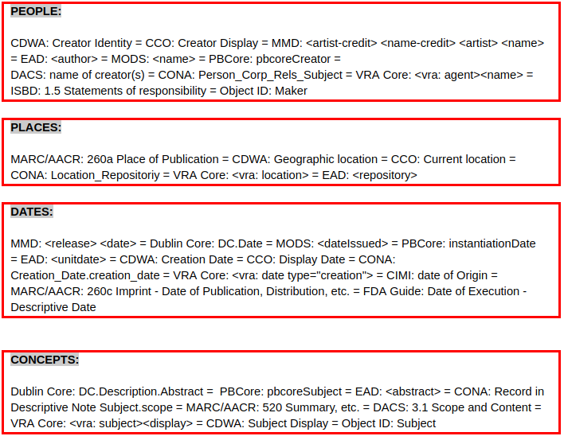
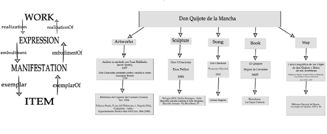

1. THE IDEA
`The cultural backgrounds of the two members of this groups is extremely different. Davide is Italian and is graduated in Languages for the publishing industry, while Hizkiel is Ethiopian and is graduated in Information Science.
We have been thinking and discussing a lot in order to find something related to the cultural heritage that we both knew in depth. After many days of brainstorming, we found out that we both knew and appreciated a lot Don Quixote, the novel written by the Spanish author Miguel de Cervantes. We enjoyed reading it and we like the noble principles that led the knight of the sorrowful figure to travel through La Mancha. Therefore, we decided to build our project around this masterpiece of literature.
Our idea arose from the Wikipedia page of Don Quixote. The idea involves La Mancha as a place, 1605 as a date and the journey for justice and chivalry as concept. As far as the people are concerned, we decided to take two of them: one is fictional, while the other is real. The two people involved in our project are therefore Don Quixote, as imaginary character, and Miguel de Cervantes Saavedra as writer.
3. THE E/R MODEL
Right after, we created an E/R model to describe our idea and the related items which will be discussed in the following paragraph. This was the first draft of our E/R model. It is actually a mind map that we used so as to organize our workflow better.

Successively, we decided to make this E/R model more abstract and therefore more easily applicable to any other cultural heritage item belonging to the same category.

3. THE 10 ITEMS
We chose 10 items to describe our idea. We focused on the variability of the items so as to provide a broad description of the topic. We also focused on the reliability of the sources, hence every item we chose is taken from a reliable website belonging to libraries, museums or cultural heritage institutions.
1. Don Chisciotte combatte contro i mulini a vento [PAINTING] (CulturaItalia)
2. Don Chisciotte [SONG] (MusicBrainz)
3. El Quijote [BOOK] (Library of Congress)
4. Don Chisciotte [SCULPTURE] (Europeana)
5. Boletín de la reproducción foto-tipográfica de la primera edición de Don Quijote de la Mancha [NEWS BULLETIN] (Europeana)
6. Michel Cervantes [PORTRAIT] (British Museum)
7. Carta Geográfica de los Viajes de don Quijote y Sitios de sus Aventuras [MAP] (Biblioteca Nacional de España)
8. La Florida del Inca [BOOK] (OPAC SBN)
9. Vida de Miguel de Cervantes Saavedra [BOOK]
(Library of Congress)
10. Andrés es azotado por Juan Haldudo [ETCHING] (Banco de imágenes de Don Quijote)
4. METADATA STANDARD AND ALIGNMENT
Successively, we described each item by using several metadata standards. This choice is due to the fact that, frequently, the metadata standards that are employed by the cultural heritage content providers are not specific enough to describe in a proper way all the amount of information that is associated to the items.
The complete table which includes the deep analysis of all the metadata can be viewed here.
The following step concerned the alignment of the metadata, structured on people, places, dates and concepts. This is the result:

5. THEORETICAL MODEL
The theoretical model is aimed at describing all the items that were selected for this project.
The theoretical model is based on the E/R model, but it extends it with new properties to represent the scenario. In the model one can see the aligned terms described in the prior section “Metadata standard alignment”.
Specifically, the theoretical model must answer the following questions:
Who – people. How to describe people? Which kind of information?
Where – places. With which kind of information do I have to represent locations?
When – dates. In which format do I need to express the notion of time?
What – subjects/concepts. What is the main content of my objects?
subjects/concepts. What is the main content of my objects?
The FRBR model (Functional Requirements for Bibliographic Records) is a conceptual entity–relationship model that relates user tasks of retrieval and access in online library catalogues and bibliographic databases from a user’s perspective. It represents a more holistic approach to retrieval and access as the relationships between the entities provide links to navigate through the hierarchy of relationships.
The FRBR model allows us to answer the preceding questions through four levels of representation: work, expression, manifestation , and item.
This is the theoretical model that we created:

This model allows us to answer questions related to our objects.
For example, we can take a random item and see how it works; if we take the map:
1. who = the authors of the map (Rodríguez, Manuel Antonio; Pellicer y Saforcada, Juan Antonio; Sancha, Gabriel de)
2. where = the entity which owns the map (Biblioteca Nacional de España, Los mapas del Quijote, 2005, p. 56)
3. what = the complete name of the map (i.e. Carta Geográfica de los Viajes de don Quijote y Sitios de sus Aventuras)
4. when = the date when the map was created (1798 - 1800)
6. CONCEPTUAL MODEL
We created our conceptual model by reusing already existing models which allowed us to answer the four preceding questions. The conceptual model that we created can be seen here.
- WHO: People
FOAF = project devoted to linking people and information using the Web.
EAC-CPF = it addresses the description of individuals, families and corporate bodies that create, preserve, use and are responsible for and/or associated with records in a variety of ways.
RDF = it expresses relations between subjects and objects in RDF triples, i.e., predicates. Domain of a property states that any resource that has given property is an instance of the class.
- WHERE: Places
LOCN = it provides a minimum set of classes and properties for describing any place in terms of its name, address or geometry.
GEONAMES = it makes it possible to add geospatial semantic information to the Word Wide Web
WGS84 Geo = representing latitude, longitude and altitude information in the WGS84 geodetic reference datum.
OWL = intended to provide a language that can be used to describe the classes and relations between them that are inherent in Web documents and applications.
- WHAT: Concepts
Cidoc CRM = it provides definitions and a formal structure for describing the implicit and explicit concepts and relationships used in cultural heritage documentation.
Provenance Vocabulary Core = it provides classes and properties for describing the provenance of Web data. It enables consumers of Web data to describe the provenance of data retrieved from the Web and of data derived from such Web data and it enables providers of Web data to publish provenance-related metadata about their data.
DCTerms = it is a smaller set of vocabulary terms that can be used to describe digital resources, as well as physical resources and objects like artworks.
FOAF = project devoted to linking people and information using the Web.
RDFS = it is an extension of the RDF vocabulary that allows describing taxonomies of classes and properties. It also extends definitions for some of the elements of RDF, for example it sets the domain and range of properties and relates the RDF classes and properties into taxonomies using the RDFS vocabulary.
- WHEN: Dates
Actually, even though we did take two items to describe the date, dates are not extremely important for our project, as we mainly focused on people, concepts and places, three aspects that are very related in this project; as a matter of fact, here people perform actions in some places because they act by following some ideal concept.
However, we chose to describe the dates through the format that was standardized by the W3C consortium.
We chose the format DD/MM/YYYY, which is the format adopted both by Italy and Spain, the most important countries involved in this project.
7. Data Description
Here we describe our data by using some tables based on the previously realized conceptual model.
|
ITEM |
PERSON |
SUBJECT/CONCEPT |
PLACE |
|
Sculpture |
|||
|
Map |
|||
|
Michel Cervantes |
6. URI for entities and RDF VISUALIZATION
We invented 3 URIs for 3 entities and we described them by using the online RDF Grapher.
URIs:
- Cervantes [PERSON]: https://donlodlam.github.io/cervantes.ttl
- La Mancha [PLACE]: https://donlodlam.github.io/la%20mancha%20code.ttl
- Journey for Justice [CONCEPT]: https://donlodlam.github.io/journey%20for%20jusitice.ttl
GRAPHS:
- Cervantes’ graph visualization: http://tinyurl.com/y2d2auwo
- La Mancha’s graph visualization: http://tinyurl.com/y4ly99u7
- Journey for Justice’s graph visualization: http://tinyurl.com/yxoprs9w